← Field Extensions lecturesPoster Gallery
Adjoining an element and the evaluation map
An algebraic closure of F must be algebraic over F and algebraically closed.
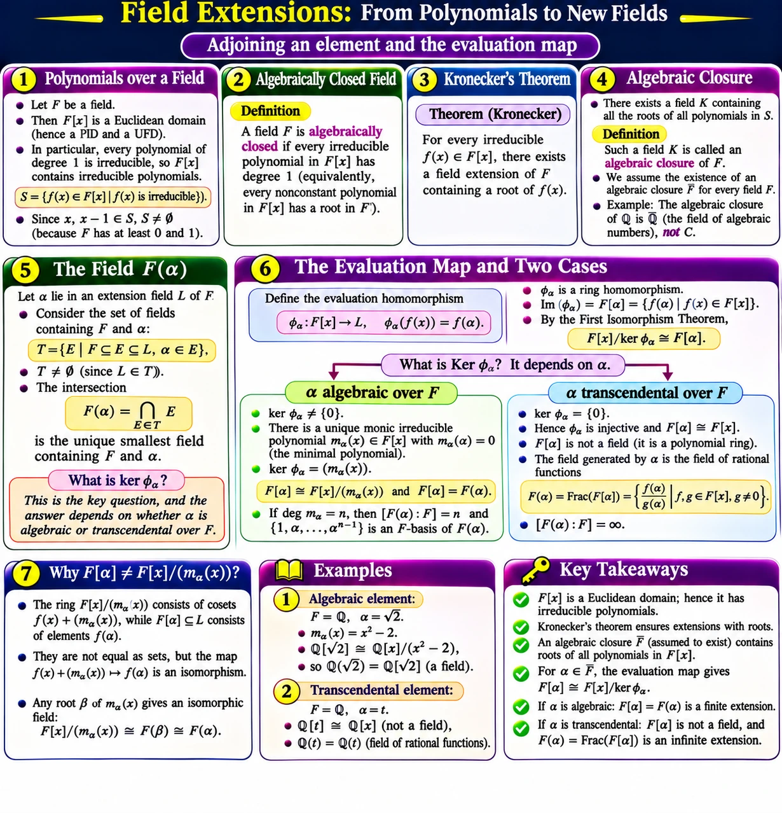
Every finite extension is finitely generated
The arrow from finitely generated to finite separable in the diagram is invalid.
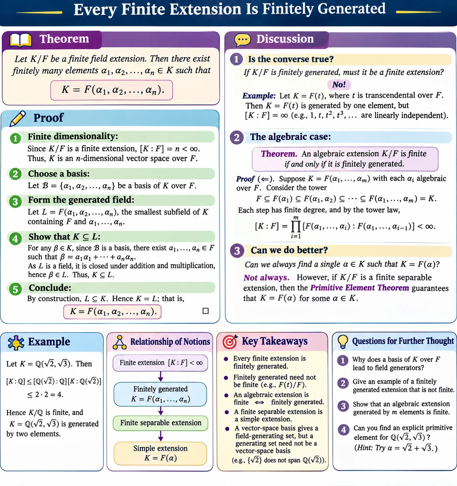
Polynomial GCD under field extension
The monic GCD agrees over any extension field when the polynomials are not both zero.
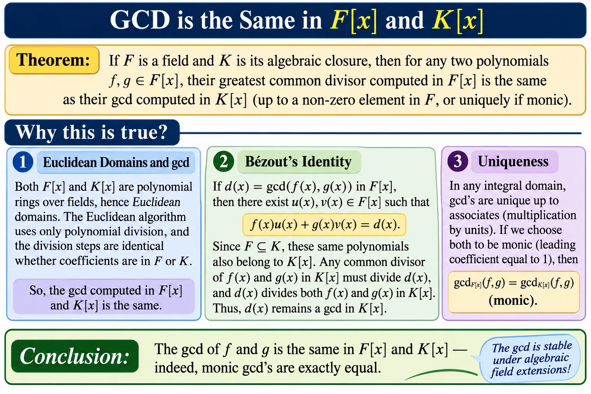
Separable polynomials and extensions
The arrows in the final diagram connect three definitions. Separability of one element alone does not imply separability of the extension.
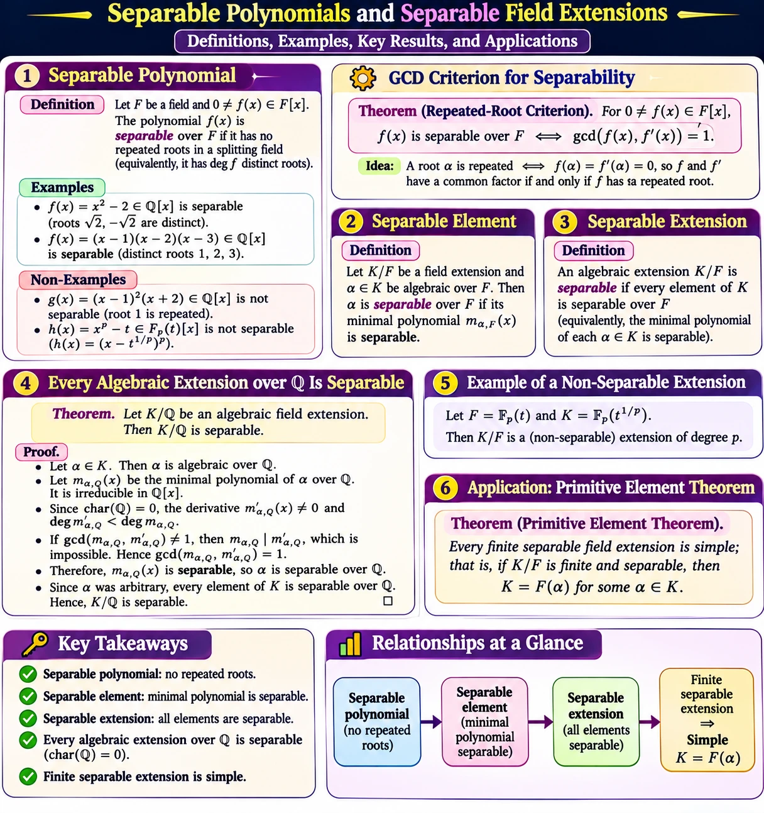
Splitting fields and normal extensions
Use root multiplicities in the factorization. The characteristic-p example is the splitting field of xᵖ − t. The single-polynomial characterization requires finite normal extensions.
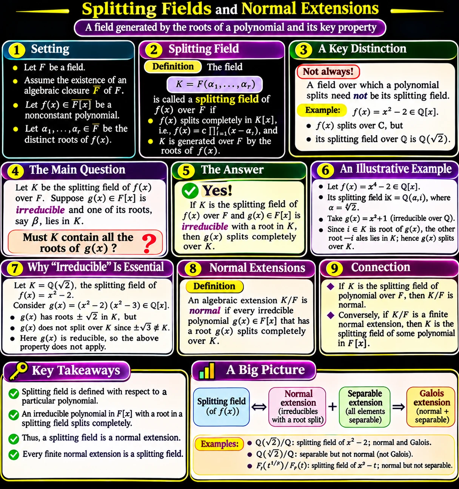
A key property of splitting fields
The characterization by a single polynomial applies to finite normal extensions.
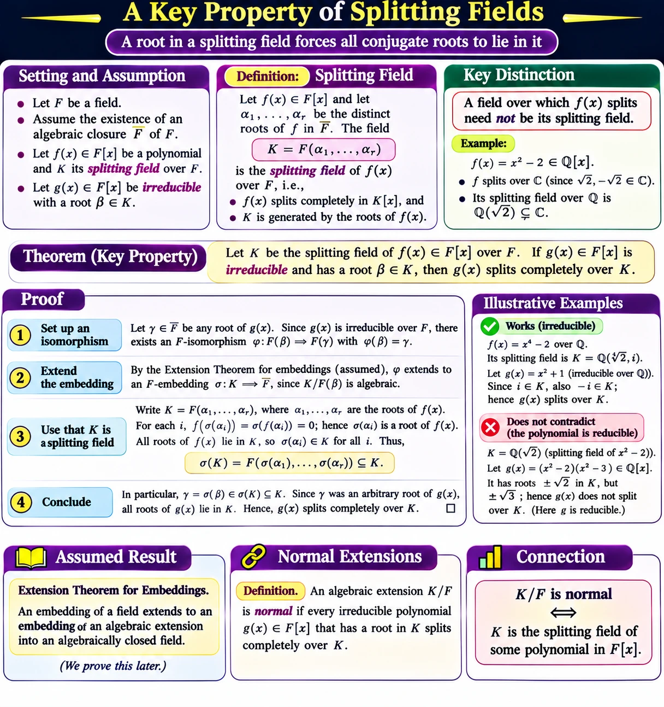
An element moved by every nonidentity automorphism
The displayed proof uses an infinite base field and a finite group.
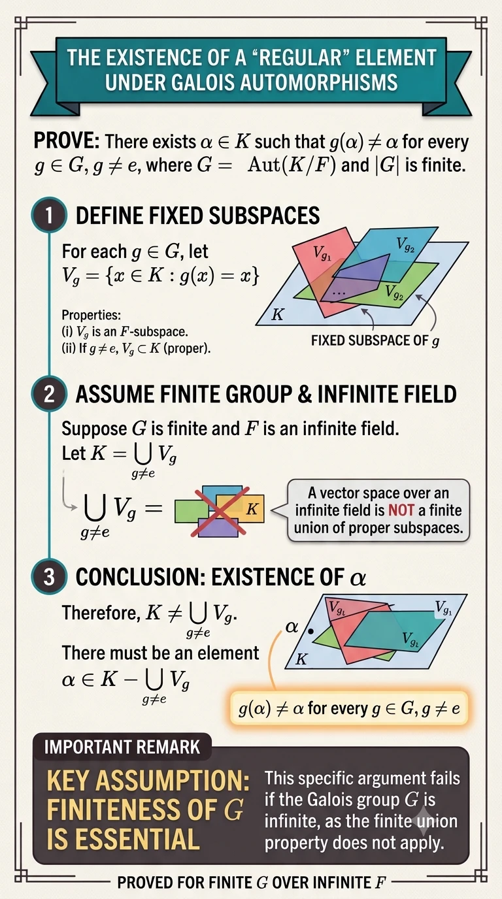
The automorphism-count criterion
For a finite base field, use a generator of the multiplicative group of the extension to obtain the required element.
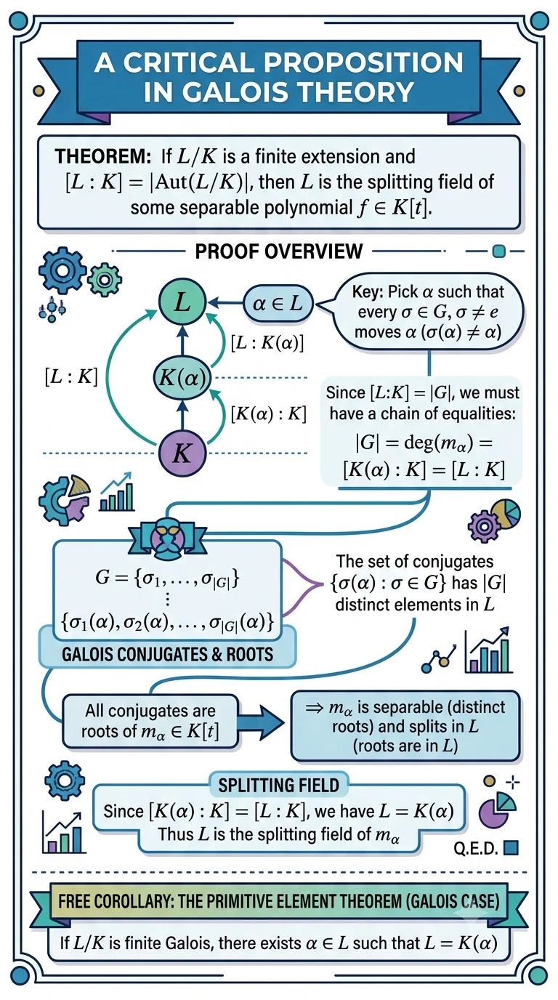
Primitive element theorem preliminaries
Finite separable extensions have finitely many intermediate fields. Arbitrary finite extensions can have infinitely many.
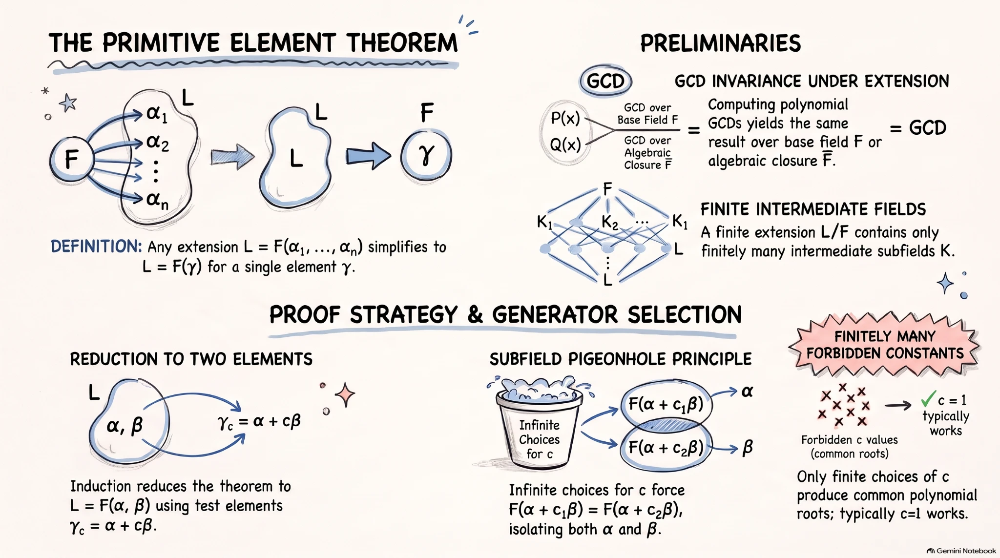
The primitive element theorem
For a general finite separable extension use embeddings into an algebraic closure. Form bad ratios only when their denominators are nonzero, and exclude those ratios that lie in the base field. Over a finite base field use cyclicity of the multiplicative group.
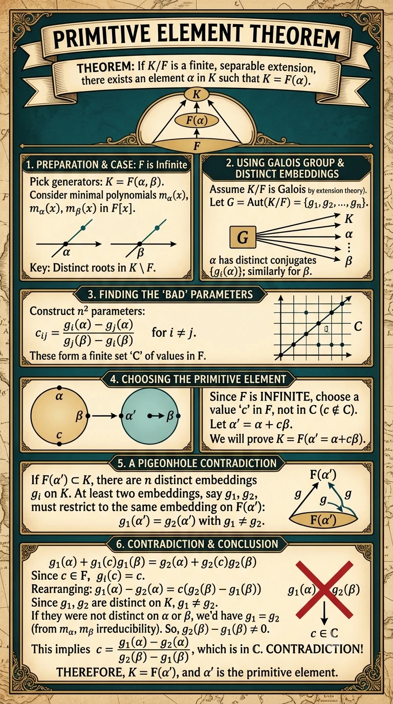
Finite extensions without a primitive element
In the generalization, take r ≥ 2 to obtain a nonsimple extension. The Frobenius identity uses (x + y)ᵖ = xᵖ + yᵖ.
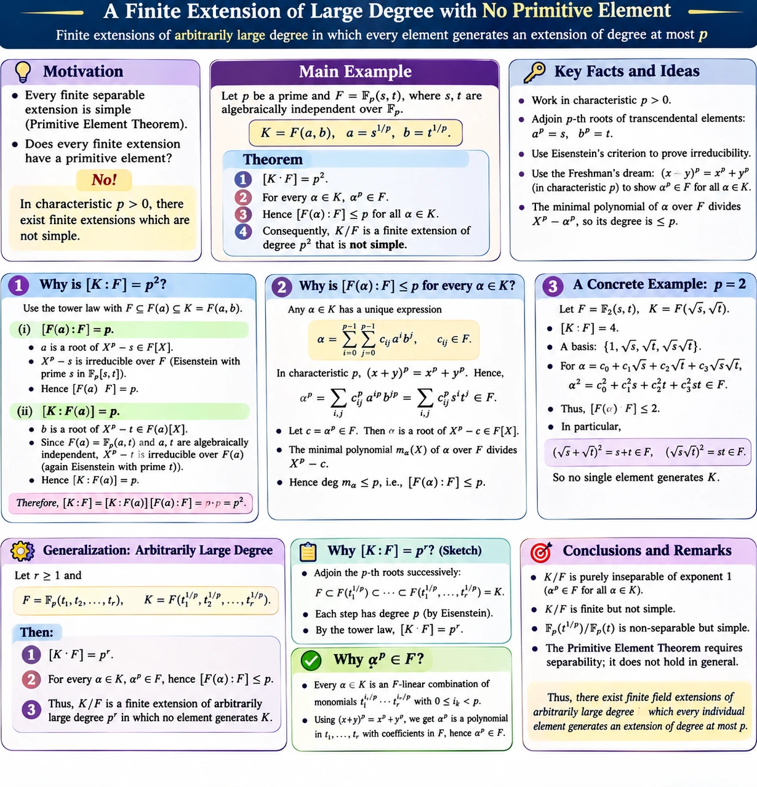
Types of field extensions
Separability and normality are independent conditions. Their conjunction defines a Galois extension.
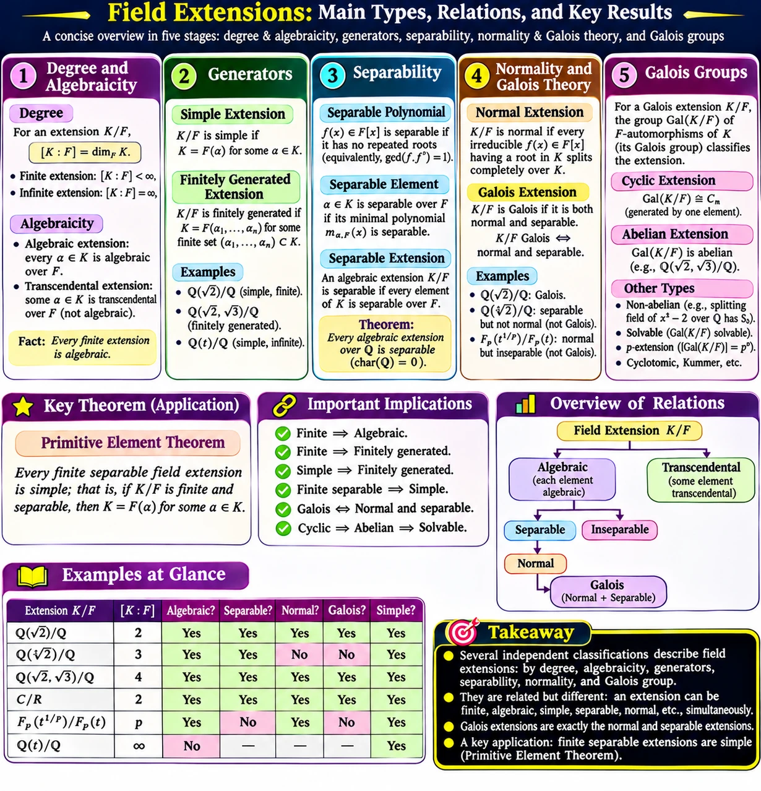
Ruler and compass constructions
A constructible complex number is the complex coordinate of a constructible point. The criterion is membership in a tower of quadratic extensions. Power-of-two degree is necessary. The cube edge in the illustration should be a∛2.
← Field Extensions lectures · Back to top